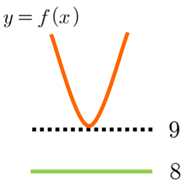
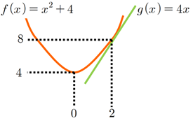

학생들의 오개념, 산술기하 부등식에서
안녕하세요. 저는 진주에 있는 항공과학고등학교에서 근무 중인 수학 선생님입니다. 저에게 글을 부탁해주셨을 때 감사한 맘도 들고 살짝 부담스럽기도 하고 어떤 글을 써야 할지 걱정이 되었습니다. 개인적으론 수업철학을 정립하는 데 도움이 되는 글을 읽는 걸 좋아하는데, 아직 제가 이런 이야기를 하기엔 부족한 점이 많은 것 같습니다. 고민 끝에 많은 학생이 헷갈리는 내용을 다뤄보려고 합니다. 일단 오늘은 산술 기하 부등식에서의 오류를 다루어 보려고 합니다.
학생들이 많은 오류를 범하는 부분입니다. 대부분 등호가 성립할 조건을 생각하지 못했거나 등호가 성립하기만 하면 최댓값(또는 최솟값)을 구할 수 있다는 착각 때문에 생기는 오류입니다. 몇 가지 예시를 보겠습니다.
예1)
일 때, 의 최솟값을 구하시오. (출처 : 미래엔 교과서)
잘못된 풀이
이므로
이고,
이다. 따라서,
이므로 의 최솟값은 이다.
물론 (1)부등식의 등호가 성립하기 위한 조건 과 (2)부등식의 등호가 성립하기 위한 조건 이 동시에 성립하지 못하기 때문입니다. 그런데 “등호 조건이 달라서 그래. 등호 조건을 잘 따져야지”라고만 한다면 학생들이 기계적으로 등호 조건만 따지는 것 같아서 아쉬웠습니다. 저는 시각화하여 설명을 해주곤 합니다. 아래 그래프를 보면 이라고 해서 반드시 의 최솟값이 이 되는 것은 아님을 알 수 있습니다.

그러니까 은 하계일 뿐 하한은 아님을 알 수 있습니다. 물론 하계, 하한 용어를 배우진 않지만, 이 부분에서 학생들이 오류를 드러냈을 때 시각화된 그래프를 이용하여 설명해주면 에서 숫자 은 이나 으로 바뀔 수 있는 무수한 하계 중 하나이고, 의미 있는 하한은 임을 인지할 수 있습니다.
간혹 “두 양수의 합이나 곱이 일정한 상수일 때만 산술 기하 부등식을 사용할 수 있다.”고 알고 있는 학생들이 있습니다. 아주 틀린 말은 아니지만, 학생들에게 유의미한 깨달음을 주는 말인지는 모르겠습니다. 다음 예시를 보겠습니다.
예2)
일 때, 산술 기하 부등식에 의해 이며 등호가 성립할 조건은 즉, 이다. 따라서 이며, 의 최솟값은 이다.
물론 틀린 설명입니다. 하지만 라는 부등식도 참이고 일 때 등호가 성립하는 것도 맞습니다. 과 의 곱이 상수로 일정하지 않더라도 산술 기하 부등식 자체는 참이라는 뜻입니다. 그렇다면 무엇이 잘못되었을지 생각해봅시다. 마찬가지로 시각화해보면 다음과 같습니다.

그림에서 볼 수 있듯 이 성립할 때 의 최솟값은 일 때 생기는 것이 아닐 수도 있습니다. 다만, 의 값이 상수 으로 일정하여 이 되고 등호가 성립하는 경우가 있으면 의 최솟값이 이 되는 것입니다.
모든 학생들이 오개념 없이, 문제 풀 때 정확한 원리를 알고 적용하기 바라는 마음에서, 글을 마치도록 하겠습니다. 감사합니다.